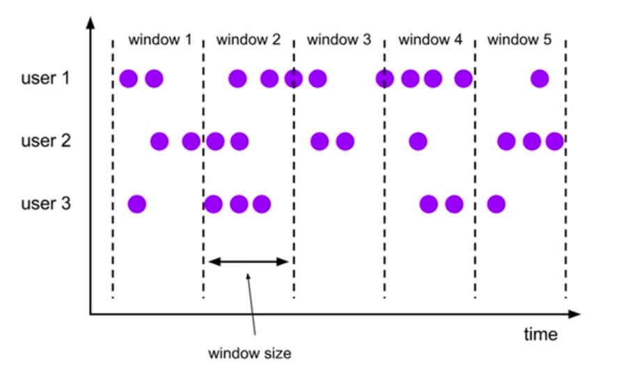
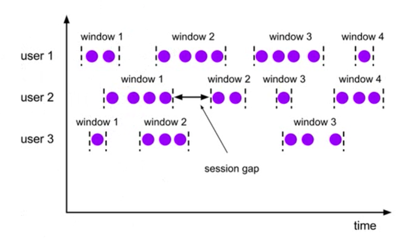

Flink
Flink笔记
[toc]
window相关的概念
将无限流切割为有限流的方式，将流数据分发到有限大小的bucket
window类型 - 时间窗口(Time Window) - 滚动时间窗口 - 滑动时间窗口 - 会话窗口 - 计数窗口(Count Window) - 滚动计数窗口 - 滑动计数窗口
滚动窗口 Tumbling Windows

- 固定窗口长度
- 无缝连接, 窗口之间没有重叠
- 时间点是左闭右开 例如[9:00, 10:00), [10:00, 11:00), ...
滑动窗口 Sliding Windows

- 滑动窗口有固定的窗口长度和滑动步长
- 窗口之间可以重叠
会话窗口 Session Windows
 1. 要指定一个session gap, 只要两个数据到来时间超过session gap, 就生成新的窗口
window api
.window …